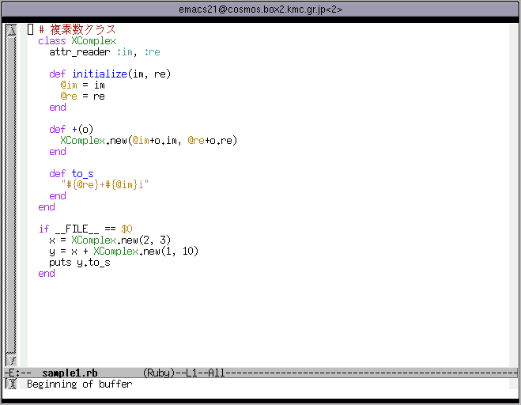
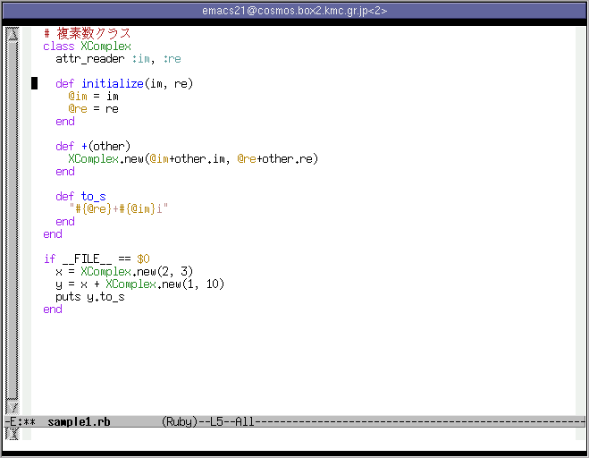
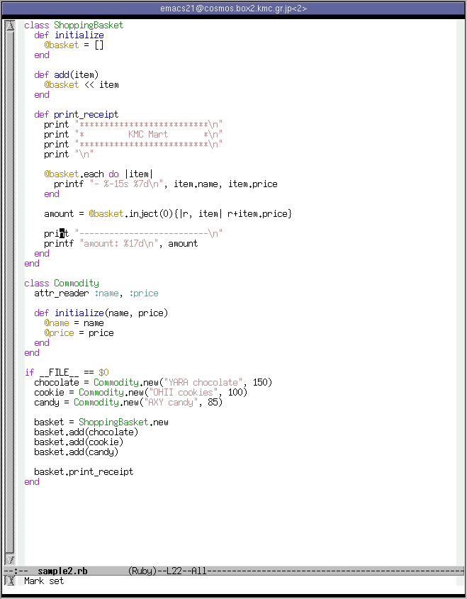
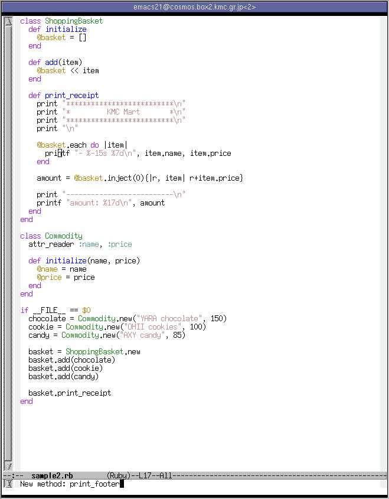
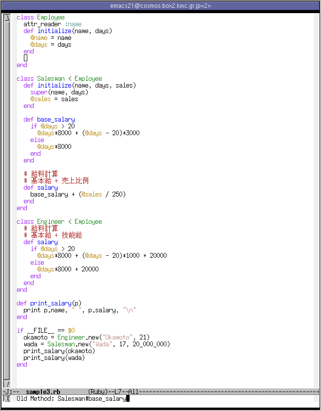

解説 Ruby Refactoring Browser - Emacs でリファクタリング
- はじめに
- Ruby Refactoring Browser とは
- インストール
- RRB によるリファクタリング
- Ruby Refactoring Browser の制約
- Tips
- 最後に
- 著者について
- 解説 Ruby Refactoring Browser 連載一覧
著者: 大林一平
はじめに
この文章では、 Ruby 用のリファクタリングブラウザ、「Ruby Refactoring Browser」 の Emacs での使いかたについて解説します。
この文章は、 Emacs 使いな読者が Ruby Refactoring Browser を一通り使いこなせるようになる ことを目標としています。
この連載について
この連載は、2 回に分けて Ruby Refactoring Browser に関する解説をします。
第 1 回は Emacs での使いかたについて解説します。簡単なサンプルスクリプトに 対して実際に Ruby Refactoring Browser を使ってリファクタリングをしてみます。
第 2 回は Ruby Refactoring Browser の組み込み方を解説します。この手のツールは エディタ、もしくは IDE と連携できると便利なのですが、私の知る限り、現在のところ Ruby Refactoring Browser は Emacs と VIM と FreeRIDE にしか対応していません。 これを他の環境でも使えるようにするためにはどのようなプログラミングが必要か 、 Emacsと VIM の場合を例にして解説します。
この文章が対象とする読者
まず、 Ruby の文法について十分な知識があることを仮定します。 また、リファクタリングの目的や方法、手順等についての知識も仮定します。 実際にリファクタリングを活用したことがあることが望ましいでしょう。
リファクタリングに詳しくない方は、まずマーチン・ファウラー著「リファクタリング」 を読むことをお勧めします。
Emacs の使いかたに関する知識も多少必要です。基本的な操作や .emacs の書き方を 知っていて、 M-x hoge と書いてそれの意味するところがわかるくらいで 十分です。
Ruby Refactoring Browser とは
まずはリファクタリングブラウザについて解説しましょう （注 リファクタリングツールという呼びかたのほうが一般的かもしれません）。 リファクタリングをする際には、新しいバグを作りこまないよう、「動作を変え ない」ように変更します。そして、それを実現するため、リファクタリングを 細かく分割し、そのそれぞれをパターンにあてはめてしまいます。例えば 「ローカル変数名を変更する」だとか、「コードの一部を別のメソッドとして切り出す」 だとかです。で、このとき、あなたが怠けものであるならば、きっとこう思うでしょう。 ローカル変数名の変更くらいコンピュータに自動でやらせりゃいいだろう、置換 コマンドでいちいち正しいか確認しながら変更していくのは面倒だ、と。 （注 「怠惰」はプログラマの三大美徳の内の一つでしたね） で、これを実現するのがリファクタリングブラウザです。 Smalltalk で最初に開発されたそうです。有名な開発環境では Eclipse の JDT がリファクタリング機能を備えています。
そして、Ruby 用のリファクタリングブラウザが Ruby Refactoring Browser です。
- ローカル/グローバル/インスタンス/クラス変数名の変更
- クラス名/定数名の変更
- メソッド名の変更
- コードの一部を新しいメソッドとして抽出
- メソッドのクラス階層間の移動
- クラス階層に新しいクラスを挿入
以上のことができます。 「コードの一部を新しいメソッドとして抽出」、「変数名の変更」などは 頻繁に使うでしょう。
配布等は http://www.kmc.gr.jp/proj/rrb/ でしています。
インストール
ここでは、 Linux 上でのインストールの方法を解説します。Unix 系の OS では ほぼ同じ方法でインストールできるはずです。ここでは Ruby 1.8.x の場合について 説明します。 1.6.x はREADME.jaを見てください。 1.9 では動きません。
まずは、上で挙げたページから最新版のアーカイブをダウンロードします。 青木さんの setup.rb を利用しているため、
cd rrb-0.1
$ ruby setup.rb config
$ ruby setup.rb setup
$ su
# ruby setup.rb installで ruby の部分はインストールできます。
そして elisp/rrb.el を Emacs のロードパスの通った所にコピーします。 あとは .emacs に
(load "rrb")と書くなり、 Emacs を起動してから
M-x load-library[RET]rrb[RET]とするなりすれば OK です。
Windows では Meadow での動作を確認しています。上の作業に加えて bin/ 以下の ファイルを rb2exe や exerb で実行可能にしておく必要があります。コンパイラ の準備などが面倒かもしれませんが一応 Windows でも使えます。
RRB によるリファクタリング
さあ、実際にリファクタリングをやってみましょう。
ここでは例として「ローカル変数の変更」「メソッドの抽出」「スーパークラス へのメソッドの移動」の 3 つをとりあげます。
ほかの機能もだいたいこれと同じ手順で利用できるので、これだけ理解すれば およその機能が使えるでしょう。
ローカル変数名の変更
では実際に使ってみましょう。まずはローカル変数名の変更からです。 以下のようなスクリプトで、 XComplex.+ のパラメータ o を other に変更しましょう。 ファイル名は、 sample1.rb とします。
# 複素数クラス
class XComplex
attr_reader :im, :re
def initialize(im, re)
@im = im
@re = re
end
def +(o)
XComplex.new(@im+o.im, @re+o.re)
end
def to_s
"#{@re}+#{@im}i"
end
end
if __FILE__ == $0
x = XComplex.new(2, 3)
y = x + XComplex.new(1, 10)
puts y.to_s
endさて emacs sample1.rb として起動します。 
M-x rrb-rename-local-variable とします。

まずは「どのメソッド」のローカル変数を変更するか、を指定します。
XComplex#+ ですね。 TAB による補完もできます。カーソル位置にある
メソッドがデフォルト値になります。
「XC[TAB]+[RET]」と入力すればよいでしょう。

次に、ローカル変数の名前を選びます。これも TAB で補完できます。 「o」とします。
最後に、新しい名前を入力します。ここでは「other」とします。

これで完了、下の図のように無事変数「o」が「other」に変更されました。 
ローカル変数の他にも、グローバル/インスタンス/クラス変数名、定数名、 メソッド名の変更もだいたい同じようにします。例えばインスタンス変数なら 「どのクラス」の「なんという名前の変数」を「何」に変更するか、 を指定します。アーカイブに含まれる doc/emacs.ja.rd や http://www.kmc.gr.jp/proj/rrb/emacs.ja.html などに多少 解説があります。
メソッドの抽出
次にをコードの一部を新たなメソッドとして切り出してみましょう。 例として挙げるのは以下のスクリプトです。名前は sample2.rb と しましょう。
class ShoppingBasket
def initialize
@basket = []
end
def add(item)
@basket << item
end
def print_receipt
print "**************************\n"
print "* KMC Mart *\n"
print "**************************\n"
print "\n"
@basket.each do |item|
printf "- %-15s %7d\n", item.name, item.price
end
amount = @basket.inject(0){|r, item| r+item.price}
print "--------------------------\n" # from
printf "amount: %17d\n", amount # to
end
end
class Commodity
attr_reader :name, :price
def initialize(name, price)
@name = name
@price = price
end
end
if __FILE__ == $0
chocolate = Commodity.new("YARA chocolate", 150)
cookie = Commodity.new("OHII cookies", 100)
candy = Commodity.new("AXY candy", 85)
basket = ShoppingBasket.new
basket.add(chocolate)
basket.add(cookie)
basket.add(candy)
basket.print_receipt
end切り出す部分は from と書かれた行から to と書かれた 行までの範囲とします。新しいメソッドの名前は print_footer としましょう。
まず、切り出したい部分の最初の行の適当な位置でマークをします。 ただし、行の末尾でマークすると次の行からになるので注意してください。 
次に、切り出したい部分の最後の行にカーソルを移動させてください。
これも行頭にカーソルを置くと前の行までになるのに注意してください。

そして、M-x rrb-extract-method[RET] とします。 新しいメソッドの名前を入力して C-m(Enter) を押せば実行されます。 
以下のようになります。切り出す部分で使われているローカル変数は
新しいメソッドの引数になります。

さて、 rrb-undo で元にもどしてから、今度は add という名前で切り出し てみます。
すると、名前が重複しているため、以下のようなメッセージが
表示されます。

このように、ある程度はチェックをしてくれます。 ただしこのチェックは完璧ではありません。名前の重複のような 低コストでチェックできることしか見ていません。 よって、変更後のユニットテストはちゃんとしてください。
メソッドの移動
3 番目の例として、あるクラスのメソッドをそのスーパークラスに 移動させましょう。対象となるスクリプトは以下のもの、名前は sample3.rb とします。
class Employee
attr_reader :name
def initialize(name, days)
@name = name
@days = days
end
end
class Salesman < Employee
def initialize(name, days, sales)
super(name, days)
@sales = sales
end
def base_salary
if @days > 20
@days*8000 + (@days - 20)*3000
else
@days*8000
end
end
# 給料計算
# 基本給 + 売上比例
def salary
base_salary + (@sales / 250)
end
end
class Engineer < Employee
# 給料計算
# 基本給 + 技能給
def salary
if @days > 20
@days*8000 + (@days - 20)*1000 + 20000
else
@days*8000 + 20000
end
end
end
def print_salary(p)
print p.name, " ", p.salary, "\n"
end
if __FILE__ == $0
okamoto = Engineer.new("Okamoto", 21)
wada = Salesman.new("Wada", 17, 20_000_000)
print_salary(okamoto)
print_salary(wada)
endSalesman#base_salary を Employee に移動させましょう。
まず、カーソルを新しいメソッドが置かれる場所に移動させます。
その行は空白行である必要があります。

つぎに、 M-x rrb-pullup-method[RET] と入力します。
移動するメソッドを入力します。 Salesman#base_salary と指定します。 
最後に、移動先のクラスを指定します。 Employee です。

結果、以下の画像のようになります。

ここからさらに Engineer#salary をリファクタリングしていけますね。
サブクラスへの移動も同様の手順でできます。
Ruby Refactoring Browser の制約
Ruby Refactoring Browser にはいくつか制約があります。
定義部と実行部への分離
Ruby のライブラリによくあるように、スクリプトの一部を 「if FILE == $0 … end」で囲む必要があります。 そして、そのスクリプトが require で読みこまれた場合、クラス/メソッド/定数 の定義だけを行い、実際の実行がされないようにする必要があります。
これは、スクリプトから定数定義情報や、クラスの継承階層を取り出すために、
require '/tmp/rrb/script1.rb'
require '/tmp/rrb/script2.rb
# 以下requireが続くというスクリプトを生成し、それを ruby の処理系で実行しているからです。
対象となるファイルの範囲
Ruby Refactoring Browser は複数ファイルにまたがるリファクタリングも可能です。 そしてリファクタリング対象となるファイルは、その emacs プロセスで読み込まれている Ruby ファイルすべてとなります。 ちなみにRubyファイルとは、「.rb」で終わるファイル、もしくは先頭行に 「#!/usr/local/bin/ruby」のような shebang な行があるものです。
Emacs には IDE でいうプロジェクトのような概念がありません。そのためこの ような仕様になっています。
まったく関連のない ruby スクリプトを編集する場合は Emacs を複数起動して ください。
文法の制限
パーサが 1.7 相当にしか対応していませんので、スクリプトも 最近変更された文法には対応していません。
Tips
上で書いたように Ruby Refactoring Browser は対象のスクリプトを実行します。 そのとき $rrb_run_for_reflection というグローバル変数が true になっています。 「if FILE == $0 … end」ではうまくいかない場合はこちらを使えば よいかもしれません。
また、 Ruby Refactoring Browser にはリファクタリング作業専用の undo があります。 M-x rrb-undo とすれば最後にしたリファクタリングがなかったことになり ます。この機能は特に複数のファイルをリファクタリングしたときに有効です。
最後に
このツールはまだ発展途上にあります。様々なバグレポート、 patch 、その 他開発に対する寄与を我々は期待しています。
当プロジェクトは RubyForge を利用しています。 プロジェクトページ には BTS や CVS リポジトリなどが置いてあります。こちらを利用してください。
Ruby Refactoring Browser で Ruby プログラミングがさらに楽しくなればと願って います。
さて、次回は Ruby Refactoring Browser の機能を様々な IDE やエディタから利用できる ようにする方法を解説する予定です。「エディタのプラグインを書く人」というかなり 狭い範囲をターゲットにした解説をします。
著者について
私（大林）は京都で大学院生をしています。専門は数学です。 また KMC（京大マイコンクラブ）部員でもあります。 Ruby Refactoring Browser の主要開発者です。 Ruby Refactoring Browser は 最初 KMC 内部のプロジェクトとして開発を開始しました。